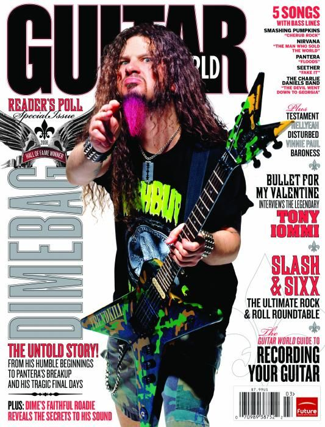
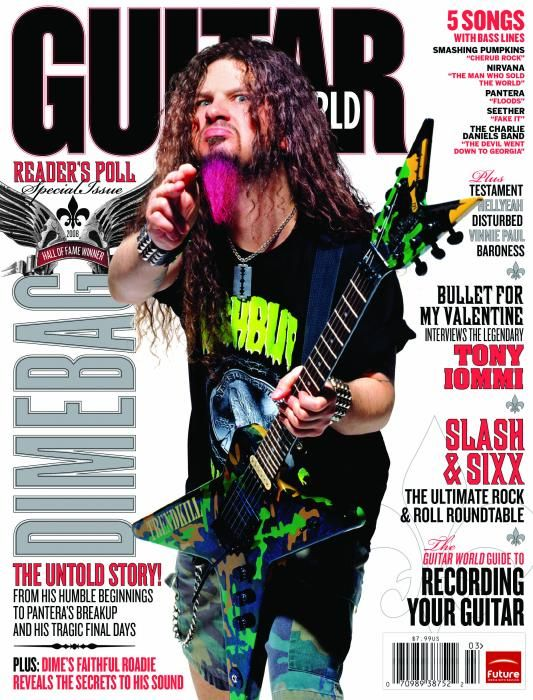

Pantera

Pantera. The band that started me down the path of heavy music. That fact may or may not have influenced the decision to boot Anthrax from this project.
The band was formed by brothers Darrell "Dimebag" Abbott and Vinnie Paul Abbott, guitarist and drummer respectively. Thrash through and through, they are also considered pioneers of the groove metal subgenre. Their later albums are definitely heavier and more pure-metal, but they never lose that Texas groove. They’re quite unlike any other band.
Pantera went into the metal history books when their album Far Beyond Driven was the first metal album to debut #1 on the Billboard 200, and was certified platinum. It also earned a Grammy nomination. Tension unfortunately started to grow within the band, and they disbanded several years.
The Abbott brothers formed a new band, Damage Plan, and Dimebag Darrell was tragically murdered while on tour in 2004. Vinnie Paul decided to form another band, supergroup Hellyeah. Tragedy hit the Abbott family again in 2018 when Vinnie Paul passed away from heart failure in 2018. Hellyeah has since replaced Vinnie Paul, and have dedicated their music to him.
Personal favorite album: The Great Southern Trendkill
 
